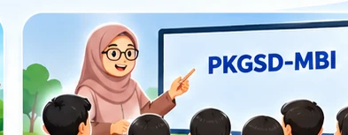

PERSONAL LEARNING HUBCode the Future.
Code the Future.
Speak to the World.
A personal learning hub that integrates English teaching, educational technology, and practical resources for teachers and learners in Indonesia.
Meet the Educator ↗Learning & Teaching Hubs
Access learning materials for students and professional development for teachers.

Teacher Development
PKGSD-MBI & Teacher TrainingFacilitation portal, training materials, teaching practice, and professional development.
MY PROFILE
Rahmi Sukmawidianto
English Teacher · EdTech Enthusiast · Facilitator
Creating practical learning experiences for students and professional learning resources for teachers.